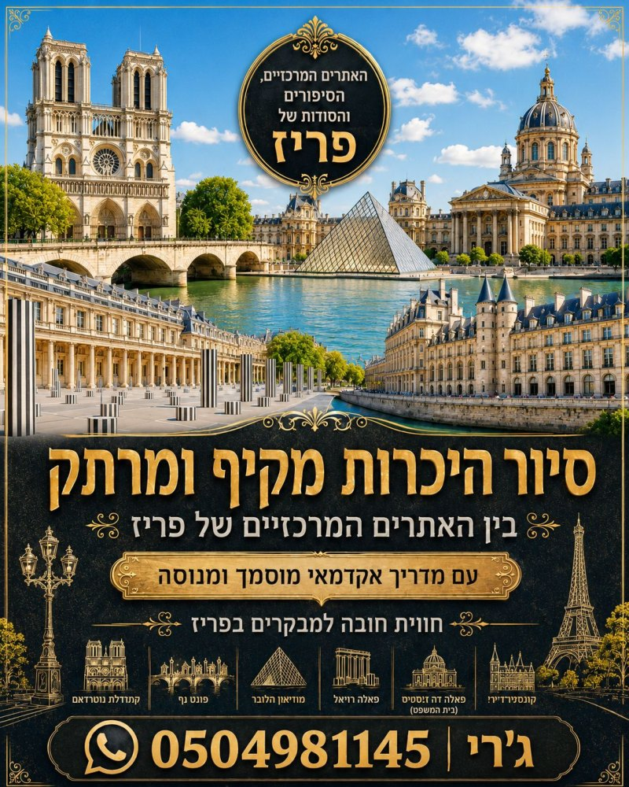
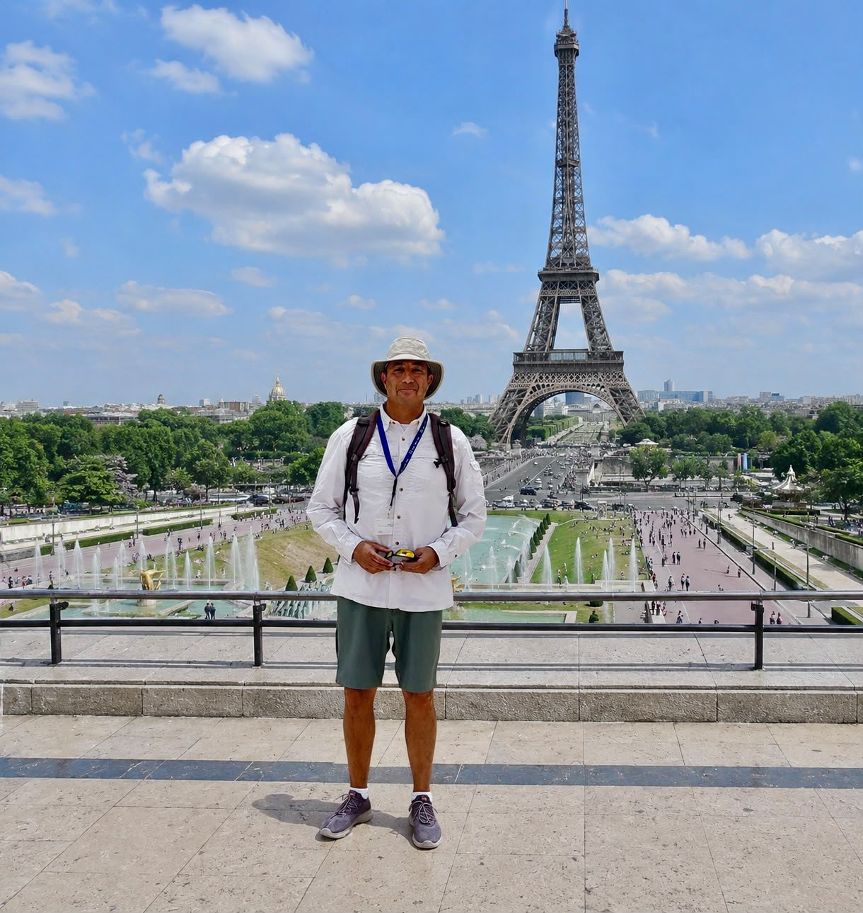
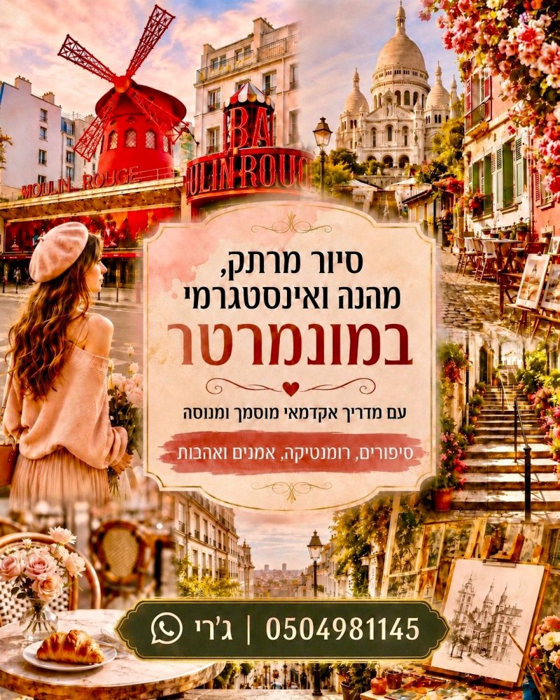
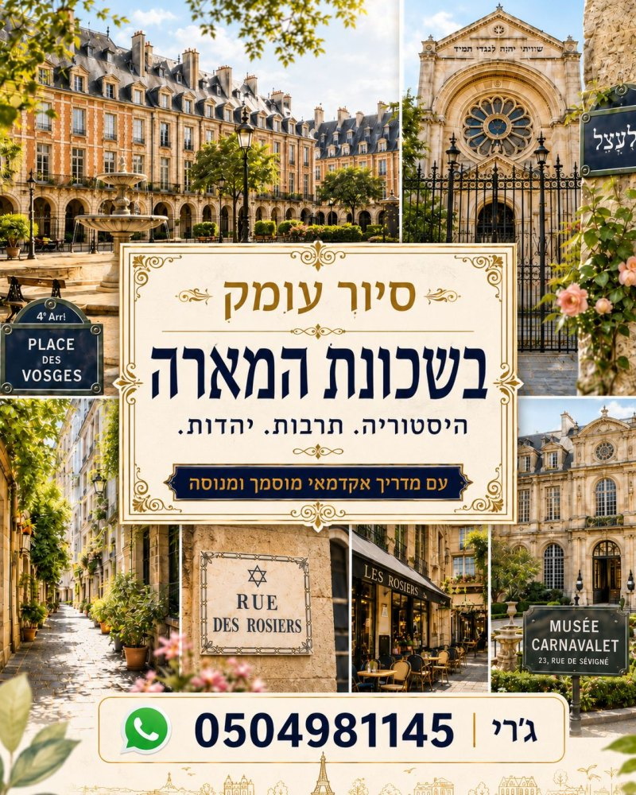
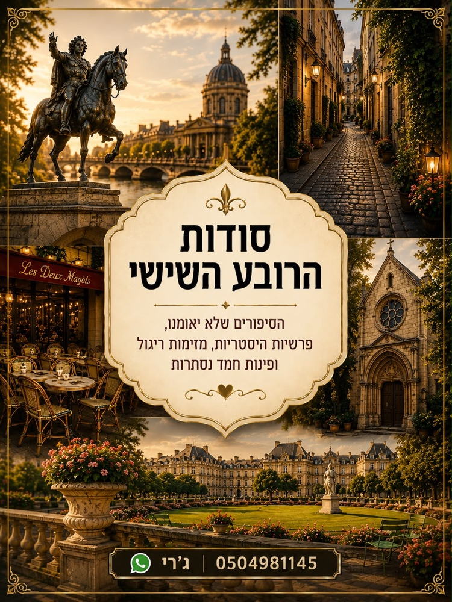

לפרטים נוספים +מדריך מוסמך ומנוסה · סיורים פרטיים
סיורי עומק פרטיים בפריז ומחוצה לה. היסטוריה ותרבות באווירה נעימה ומרתקת.

לחצו על כרזה כדי לראות את פרטי הסיור.

לפרטים נוספים +
לפרטים נוספים +
לפרטים נוספים +
לפרטים נוספים +הבחירה קשה ולא בטוחים איזה סיור לסגור? בדיוק בשביל זה אני כאן. דברו איתי, ואתאים לכם את הסיור המושלם עבורכם!
שריינו סיור פרטיג'רי, הסיור בהדרכתך היה כניסה מושלמת לפריז. העברת לנו בדרך נעימה ומשעשעת ידע רב ומרשים. אתה מקצוען אמיתי. הרגשנו את ההשקעה ושאתה עושה זאת מכל הלב. נמליץ בחום לכל מכרינו.
מיכל ונדב
ג'רי, תודה רבה על הסיור המעניין, מאוד נהנינו.
לילי ז'
היינו בסיור של ג'רי בפריז, היה מצוין, מומלץ ממש! הסביר בסבלנות, סיפר סיפורים מעניינים כל הדרך, הביא הרבה ידע והיה מקצועי ביותר. שמחה מאוד שבחרנו להצטרף, בהחלט הוסיף לנו הרבה לטיול. תודה רבה!
אסתר כהן
סיור פשוט נהדר! ג'רי מדריך נפלא, סבלני, מצחיק, ומעביר בחסד את ההיסטוריה הנפלאה של פריז! ממליצה בחום רב!
גאיה פ.
היום עשינו סיור משפחתי עם ג'רי המדריך. בהתחלה חששנו כי אנחנו צעירות שלא אוהבות היסטוריה משעממת... עשיתי הרבה סיורים בחיי אבל ג'רי באמת הצליח להפתיע אותי בתוכן בלתי נגמר ומרתק! מעניין ולא משעמם לרגע, סבלני לכל השאלות. שווה להקדיש שלוש שעות לסיור איתו, זה שווה כל שקל וכל דקה! הסיור פשוט חלף בשנייה ולא האמנו שעברו שלוש שעות!
אוריה א'
ממליצה בחום לכל מי שמגיע לפריז! משפחות, חברות, אחיות, זוגות! פשוט מומלץ ושווה!
מירב א'
ג'רי, תודה על הסיור המאלף היום!
אמיר ס'
ג'רי המדריך הכי טוב שאפשר להכיר! הייתה לנו זכות לטייל איתו יומיים בפריז, ואין לנו מילים לתאר כמה נהנינו. מהרגע הראשון הוא היה מקצועי, סבלני, אדיב ומלא ידע. הוא לקח אותנו לכל המקומות החשובים והיפים שחייבים לראות בפריז והפך את החוויה למיוחדת ומהנה הרבה יותר. מעבר לטיולים עצמם, הוא היה זמין עבורנו גם בוואטסאפ לאורך כל הדרך, ענה בשמחה על כל שאלה, נתן המלצות מצוינות ועזר בכל דבר. אם אתם מחפשים מדריך שיהפוך את הטיול לחוויה בלתי נשכחת, עם יחס אישי, אכפתיות והמון מקצועיות, אנחנו ממליצים עליו מכל הלב!
מאריה ח'
שמי ירון, אבל כולם קוראים לי ג'רי. אני מדריך ותיק ומנוסה. גרתי וחייתי בחו״ל שנים לא מעטות, בהן בפיליפינים, בבלגיה ובצרפת. אני מורה דרך מוסמך מטעם יד בן-צבי בירושלים, ובמהלך השנים השלמתי שני תארים מתקדמים (M.A) בהצטיינות: האחד מאוניברסיטת פריז-8 והשני מבר-אילן 🤓.
אני פריק של טיולים וחובב מושבע של היסטוריה, ומוסמך להדרכה בארבע שפות: אנגלית, צרפתית, עברית וערבית. הדרכתי מאות סיורים ואלפי מטיילים. אני אוהב להביא למטיילים שלי את הסיפורים המרתקים ביותר על פריז, וחשוב לי שכשתחזרו ארצה תרגישו שהביקור בעיר האורות היה משודרג ומושלם. ברחבי פריז אני מדריך כמה סיורי עומק מקוריים לגמרי, מדריך בעברית במוזיאון הלובר, ומוביל גם קבוצות ומשפחות לטיולים מרהיבים מחוץ לעיר לפי בקשה.
שלחו לי וואטסאפכתבו לי בוואטסאפ, בטלפון, במייל או בפייסבוק/אינסטגרם, ואחזור אליכם עם כל הפרטים והמחירים, ונתאים יחד את הסיור המושלם עבורכם.
קטעים, סיפורים וטיפים שכתבתי על פריז לאורך השנה.